Chapter: Multivariate Linear Regression¶
1. Extension to Multiple Features¶
[Source: Multivariate Linear Regression-Shared.pdf, Slide 1-5]
In real-world applications, target variables depend on multiple features rather than a single feature. Multivariate Linear Regression generalizes simple linear regression to handle \(n\) independent input variables.
1.1 Dataset Notation and Terminology¶
- \(n\): Total number of features.
- \(m\): Total number of training examples.
- \(x^{(i)}\): Feature vector of the \(i\)-th training example (an \((n+1)\)-dimensional column vector).
- \(x_j^{(i)}\): Value of feature \(j\) in the \(i\)-th training example.
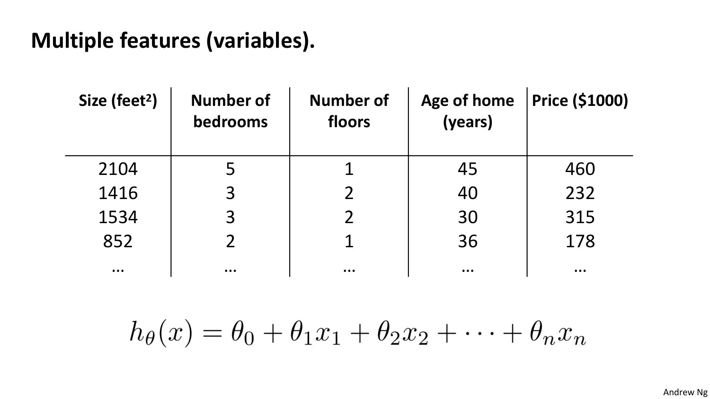
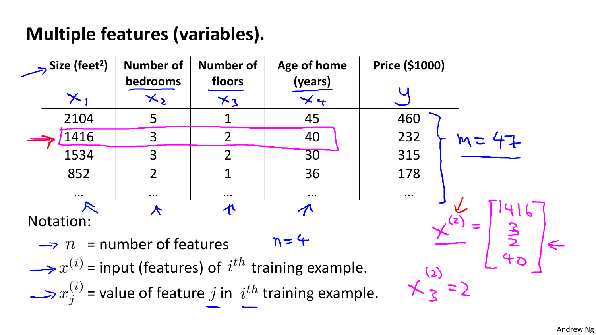
Real-Estate Example Dataset (\(n = 4\) features, \(m = 47\) instances):¶
| Size (\(x_1\)) [sq ft] | Bedrooms (\(x_2\)) | Floors (\(x_3\)) | Age (\(x_4\)) [years] | Price (\(y\)) [$1000] |
|---|---|---|---|---|
| 2104 | 5 | 1 | 45 | 460 |
| 1416 | 3 | 2 | 40 | 232 |
| 1534 | 3 | 2 | 30 | 315 |
| 852 | 2 | 1 | 36 | 178 |
For example instance \(i = 2\):
2. Vectorized Hypothesis Formulation¶
[Source: Multivariate Linear Regression-Shared.pdf, Slide 6-7, 10-12]
2.1 Multi-Feature Hypothesis Equation¶
The non-vectorized hypothesis for \(n\) features is:
To express this compactly in vector notation, we define a dummy intercept feature:
Now, define feature vector \(x \in \mathbb{R}^{n+1}\) and parameter vector \(\theta \in \mathbb{R}^{n+1}\):
2.2 Matrix-Vector Multiplication Form¶
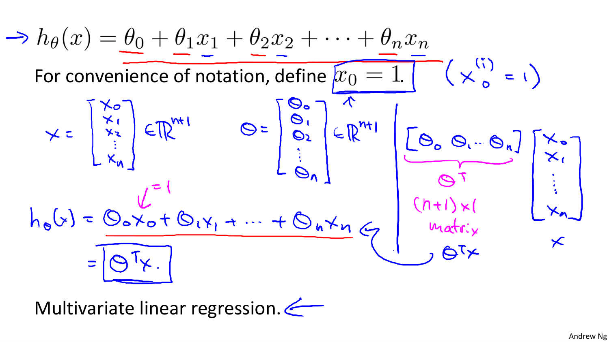
2.3 Multivariate Cost Function and Gradient Descent¶
The cost function for \(n\) features remains Mean Squared Error:
Gradient Descent Update Rule (\(n \ge 1\)):¶
Notice that for \(j = 0\), since \(x_0^{(i)} = 1\), the update equation matches univariate linear regression identically!
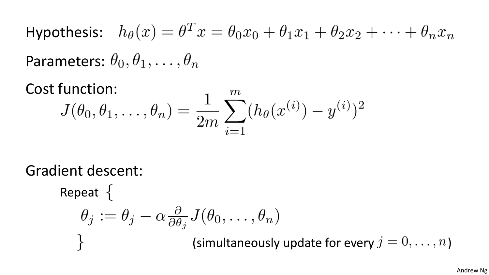
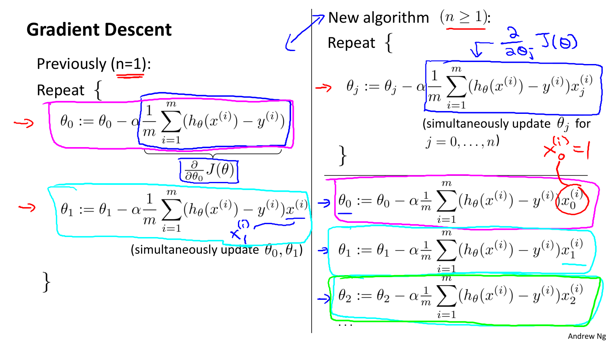
3. Feature Scaling & Normalization¶
[Source: Multivariate Linear Regression-Shared.pdf, Slide 13-16]
3.1 Why Feature Scaling is Necessary¶
When features have vastly different ranges (e.g., House Size \(x_1 \in [300, 5000]\) sq ft vs Number of Bedrooms \(x_2 \in [1, 5]\)), cost function contours become narrow, highly skewed ellipses. Gradient descent oscillates inefficiently back and forth, requiring many iterations to converge.
By scaling features to approximately \(-1 \le x_i \le 1\), cost function contours become circular, allowing gradient descent to take direct paths toward global minimum.
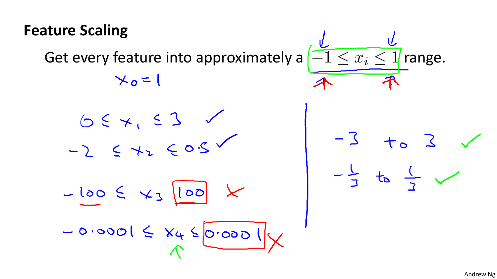
3.2 Min-Max Normalization¶
Maps feature values into a bounded range \([new\_min_A, new\_max_A]\) (typically \([0, 1]\)):
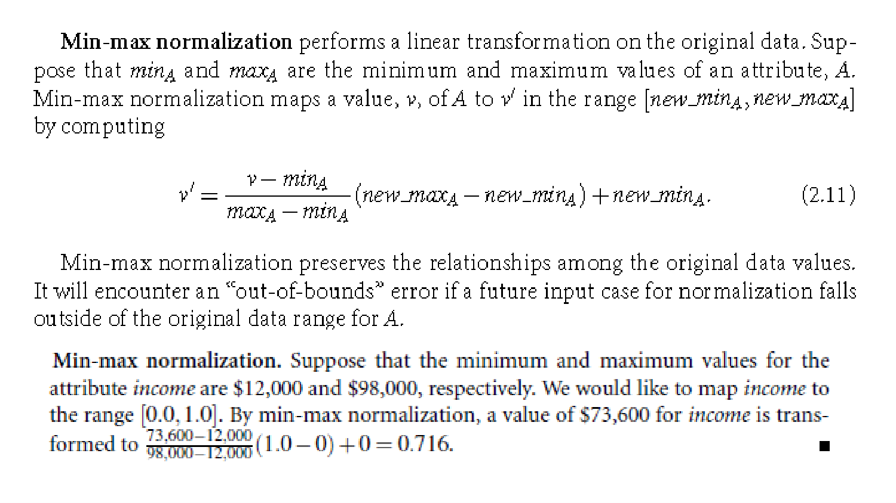
Worked Example:¶
Given attribute income with range \([\$12,000, \$98,000]\), scale \(v = \$73,600\) into \([0.0, 1.0]\):
3.3 Z-Score Normalization (Standardization)¶
Centers features to zero mean (\(\bar{x} = 0\)) and unit standard deviation (\(\sigma = 1\)):
Where: - \(\mu_j = \frac{1}{m} \sum_{i=1}^m x_j^{(i)}\) (mean of feature \(j\)). - \(\sigma_j = \sqrt{\frac{1}{m} \sum_{i=1}^m (x_j^{(i)} - \mu_j)^2}\) (standard deviation of feature \(j\)).
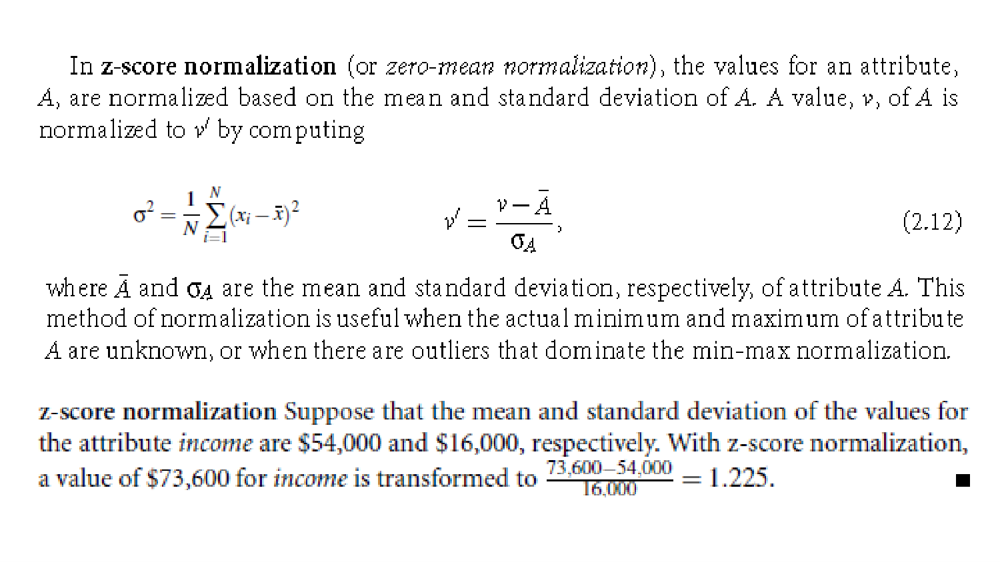
Worked Example:¶
Given attribute income with mean \(\mu = \$54,000\) and standard deviation \(\sigma = \$16,000\), normalize \(v = \$73,600\):
4. Learning Rate Selection and Convergence Debugging¶
[Source: Multivariate Linear Regression-Shared.pdf, Slide 17-21]
4.1 Debugging Plot (\(J(\theta)\) vs Iterations)¶
Plot cost \(J(\theta)\) against iteration count to verify gradient descent behavior: - Normal behavior: \(J(\theta)\) decreases monotonically after every single iteration and flattens out upon reaching convergence. - Incorrect behavior: If \(J(\theta)\) increases or oscillates up and down, learning rate \(\alpha\) is too large; reduce \(\alpha\).
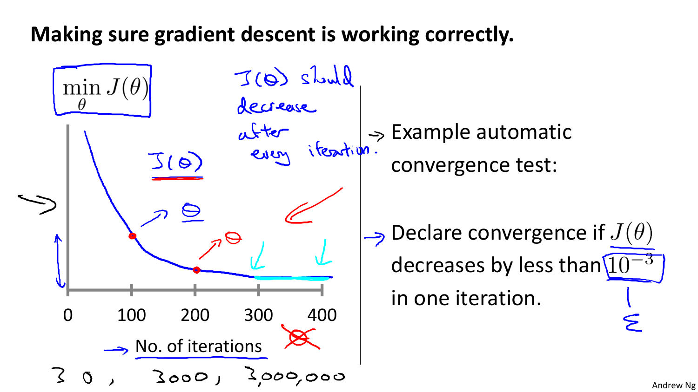
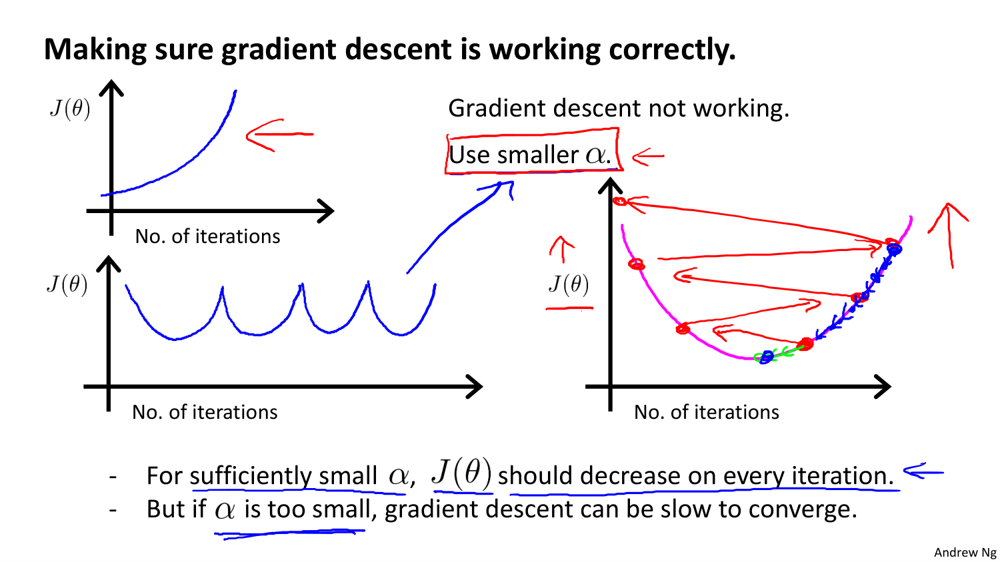
4.2 Automatic Convergence Test¶
Declare convergence if cost \(J(\theta)\) decreases by less than threshold \(\epsilon\) (e.g., \(\epsilon = 10^{-3}\)) in one iteration.
4.3 Practical Rule for Choosing \(\alpha\)¶
Try a sequence of \(\alpha\) values scaled by factors of approximately \(3\):
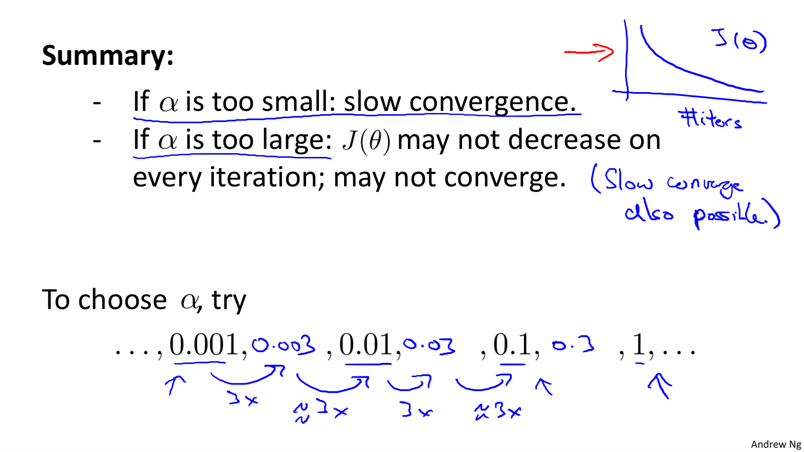
5. Polynomial Regression & Feature Engineering¶
[Source: Multivariate Linear Regression-Shared.pdf, Slide 23-25]
Linear regression can model complex non-linear relationships by creating polynomial features.
5.1 Polynomial Feature Mapping¶
Suppose dataset plot indicates a non-linear relationship between house Size (\(x\)) and Price (\(y\)):
We map this into multivariate linear regression by defining new variables: - \(x_1 = \text{size}\) - \(x_2 = (\text{size})^2\) - \(x_3 = (\text{size})^3\)
Thus, \(h_\theta(x) = \theta_0 + \theta_1 x_1 + \theta_2 x_2 + \theta_3 x_3\).
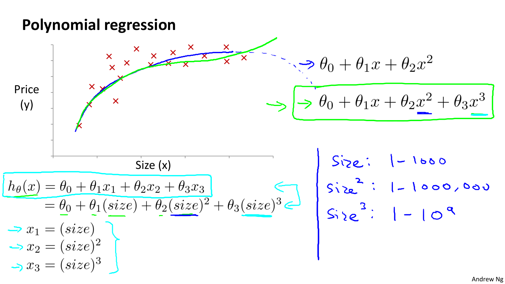
5.2 Choice of Non-Linear Features¶
Polynomials like cubic curves may decrease at large values. Alternative mappings like square-root functions can be used:
⚠️ Warning on Feature Scaling:¶
When using polynomial features, feature scaling becomes indispensable. For instance, if \(\text{size} \in [1, 1000]\), then \(\text{size}^2 \in [1, 10^6]\) and \(\text{size}^3 \in [1, 10^9]\)!
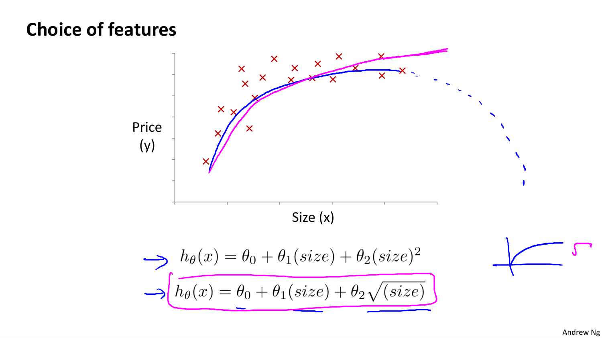
6. Analytical Solution: The Normal Equation¶
[Source: Multivariate Linear Regression-Shared.pdf, Slide 27-32]
Instead of iterative gradient descent, the optimal parameters \(\theta^*\) can be computed analytically in closed-form using the Normal Equation.
6.1 Matrix Formulation¶
Construct Design Matrix \(X \in \mathbb{R}^{m \times (n+1)}\) and Target Vector \(y \in \mathbb{R}^m\):
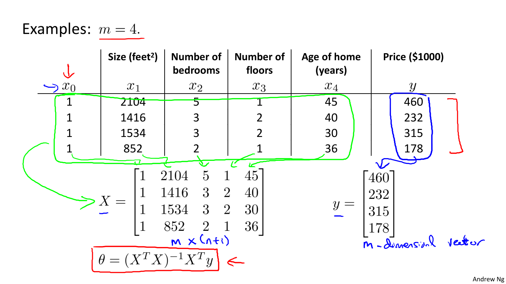
6.2 Closed-Form Derivation¶
The vector cost function is:
To minimize \(J(\theta)\), set matrix partial derivative to zero vector \(\mathbf{0}\):
Multiplying both sides by matrix inverse \((X^T X)^{-1}\):
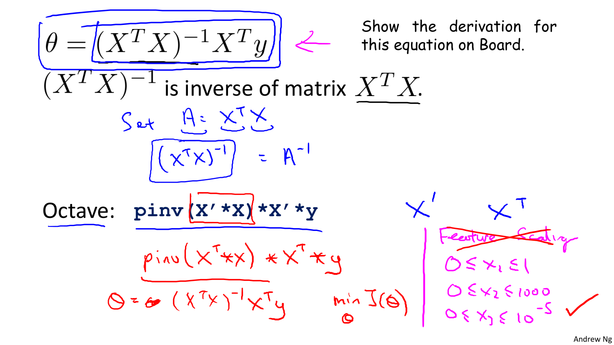
6.3 Octave / MATLAB Implementation¶
6.4 Gradient Descent vs. Normal Equation¶
| Metric / Property | Gradient Descent | Normal Equation |
|---|---|---|
| Hyperparameter Tuning | Must choose learning rate \(\alpha\) | No learning rate \(\alpha\) required |
| Computation Paradigm | Iterative (requires many steps) | Closed-form direct matrix inverse |
| Time Complexity | \(O(k \cdot n^2)\) for \(k\) iterations | \(O(n^3)\) due to inverse of \((n+1) \times (n+1)\) matrix |
| Large Datasets (\(n \ge 10^6\)) | Scalable, works very well | Extremely slow (\(n > 10,000\) computationally infeasible) |
| Feature Scaling | Mandatory for fast convergence | Not required |
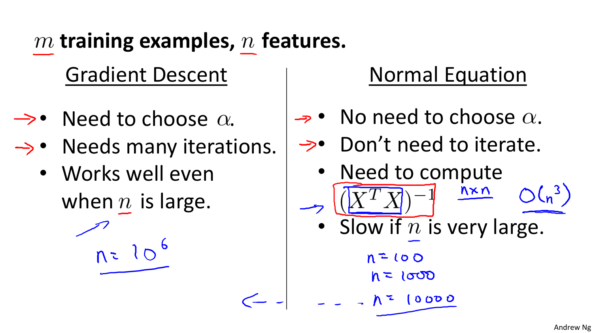
7. Non-Invertibility of \((X^T X)\)¶
[Source: Multivariate Linear Regression-Shared.pdf, Slide 33-35]
What happens if \((X^T X)\) is singular (non-invertible / degenerate)?
7.1 Root Causes of Non-Invertibility¶
- Redundant Features: Linearly dependent features (e.g., \(x_1 =\) size in \(\text{ft}^2\) and \(x_2 =\) size in \(\text{m}^2\), where \(x_1 = 3.28^2 x_2\)).
- Too Many Features (\(m \le n\)): Number of training examples \(m\) is less than or equal to number of features \(n\).
7.2 Remedies¶
- Delete redundant features manually or via feature selection.
- Use pseudo-inverse algorithm
pinv()in software, which computes a pseudoinverse even for singular matrices. - Apply Regularization (adds \(\lambda I\) to \(X^T X\), guaranteeing invertibility).
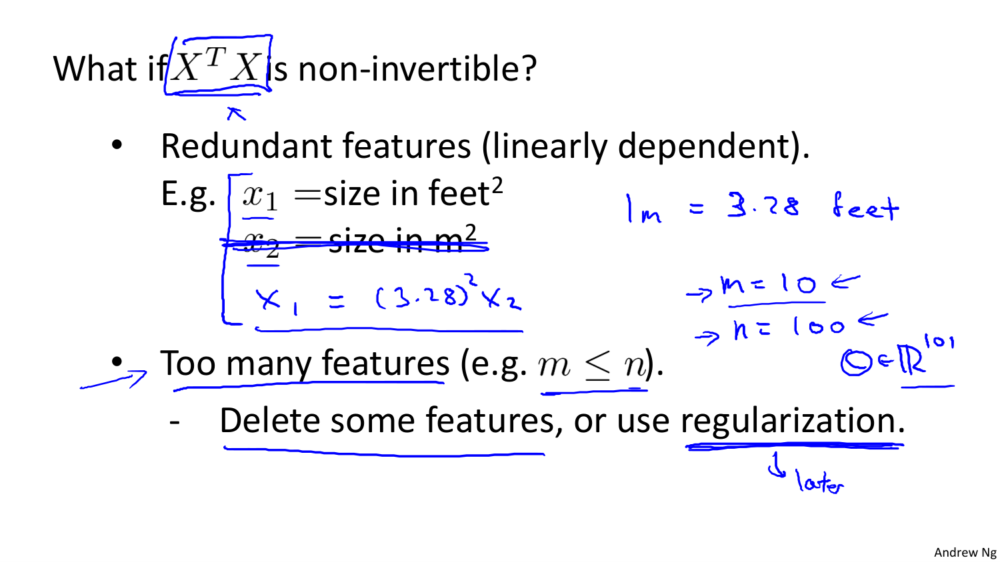
8. Simple Closed-Form Least Squares Derivation¶
[Source: Multivariate Linear Regression-Shared.pdf, Slide 36-37]
For single variable linear regression \(y = w_0 + w_1 x\), the closed-form analytical equations are:
Where \(\bar{x} = \frac{1}{d} \sum x_i\) and \(\bar{y} = \frac{1}{d} \sum y_i\).
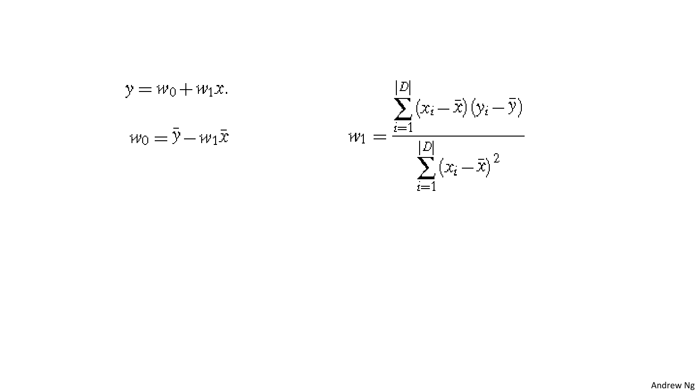
Hand-Worked Salary Numerical Example:¶
Dataset (\(d = 10\)): - Experience \(x = [3, 8, 9, 13, 3, 6, 11, 21, 1, 16]\) - Salary \(y = [30, 57, 64, 72, 36, 43, 59, 90, 20, 83]\)
Calculated Means: \(\bar{x} = 9.1\), \(\bar{y} = 55.4\).
Substituting into least squares formulas:
Fitted Model: \(\hat{y} = 23.6 + 3.5 x\). Predicting salary for \(10\) years experience: \(\hat{y} = 23.6 + 3.5(10) = 58.6 \implies \$58,600\).
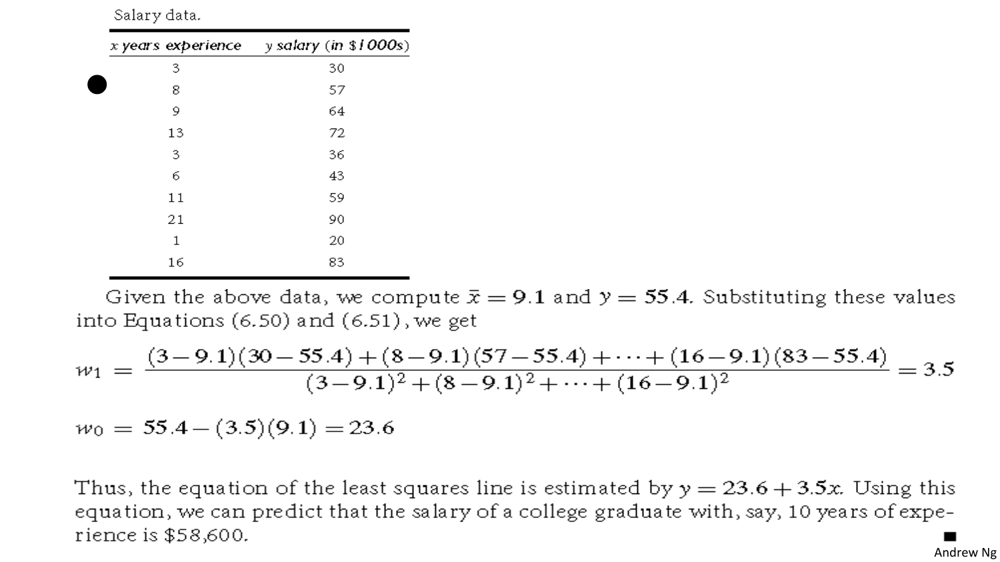
9. Error Metrics & Predictor Evaluation¶
[Source: Multivariate Linear Regression-Shared.pdf, Slide 38-39]
9.1 Summary of Error Measures¶
| Metric | Formula | Description |
|---|---|---|
| Absolute Error | $ | y_i - y_i' |
| Squared Error | \((y_i - y_i')^2\) | Squared deviation per instance |
| Mean Absolute Error (MAE) | $\frac{1}{d} \sum_{i=1}^d | y_i - y_i' |
| Mean Absolute Percentage Error (MAPE) | $\frac{1}{d} \sum_{i=1}^d \left | \frac{y_i - y_i'}{y_i}\right |
| Root Mean Square Error (RMSE) | \(\sqrt{\frac{\sum_{i=1}^d (y_i - y_i')^2}{d}}\) | Square root of mean squared error |
| Normalized RMSE (NRMSE) | \(\frac{\text{RMSE}}{y_{\max} - y_{\min}}\) | Scale-independent RMSE metric |
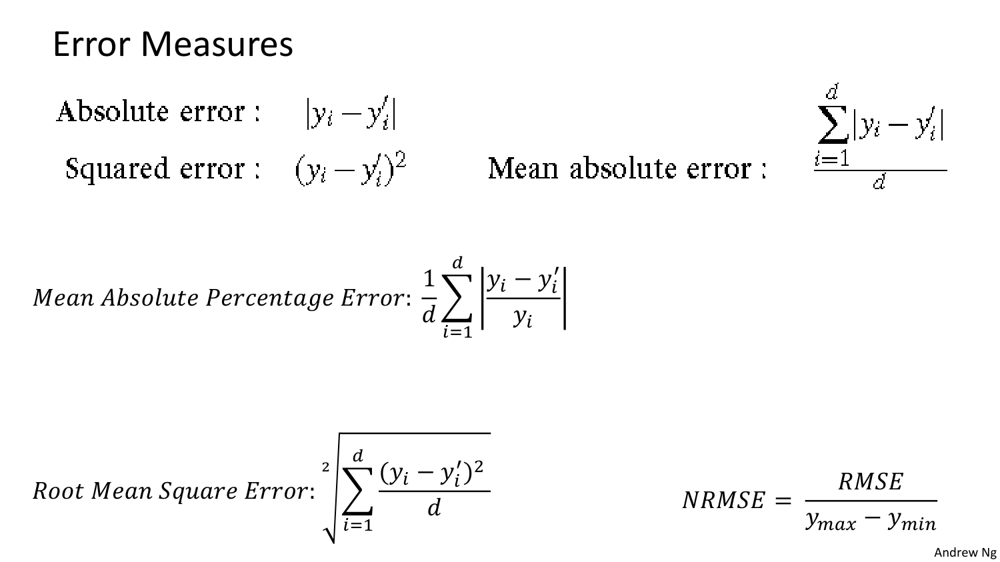
9.2 Data Evaluation Schemes¶
- Holdout Validation: Partition dataset into Training Set and Test Set.
- \(K\)-Fold Cross Validation: Divide training data into \(K\) equal folds, repeatedly holding out 1 fold for evaluation.
- Train / Validation / Test Splitting:
- Train Set: Fits parameters \(\theta\).
- Validation Set: Tunes hyperparameters (\(\alpha\), polynomial degree, regularization \(\lambda\)).
- Test Set: Final unbiased generalization score.
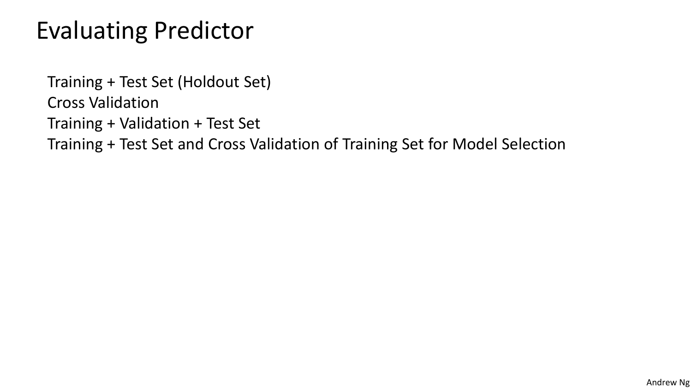
10. Mermaid Process Flow¶
flowchart TD
A[Multivariate Dataset X, y] --> B{Choose Solution Method}
B -- Gradient Descent --> C[Perform Feature Scaling Z-Score / Min-Max]
C --> D[Initialize Parameters theta]
D --> E[Iteratively Update theta := theta - alpha * grad]
E --> F[Check Convergence J_iter - J_prev < 1e-3]
F -- Converged --> G[Final Model theta*]
B -- Normal Equation --> H{Check if X^T X is Singular?}
H -- Non-Singular --> I[Compute theta = X^T X^-1 X^T y]
H -- Singular m <= n or Collinear --> J[Use pinv X' X * X' y or Regularization]
I --> G
J --> G11. Formula Sheet¶
| Metric / Method | Formula |
|---|---|
| Vectorized Hypothesis | \(h_\theta(x) = \theta^T x = \sum_{j=0}^n \theta_j x_j \quad (x_0 = 1)\) |
| Z-Score Normalization | \(x_j' = \frac{x_j - \mu_j}{\sigma_j}\) |
| Min-Max Normalization | \(v' = \frac{v - \min}{\max - \min} (\text{new\_max} - \text{new\_min}) + \text{new\_min}\) |
| Normal Equation | \(\theta = (X^T X)^{-1} X^T y\) |
| MAE | $\text{MAE} = \frac{1}{d} \sum_{i=1}^d |
| RMSE | \(\text{RMSE} = \sqrt{\frac{1}{d} \sum_{i=1}^d (y_i - \hat{y}_i)^2}\) |
| NRMSE | \(\text{NRMSE} = \frac{\text{RMSE}}{y_{\max} - y_{\min}}\) |
12. Exam-Oriented Review¶
12.1 Potential Exam Questions¶
- Why does feature scaling affect Gradient Descent performance, but leaves Normal Equation results completely unchanged?
-
Solution: Gradient descent steps depend directly on feature magnitude gradients. Unscaled features create unbalanced cost surface contours, slowing gradient steps. The Normal Equation computes analytical global minimum directly via matrix projection \(\theta = (X^T X)^{-1} X^T y\), which is invariant to feature scale linear transformations.
-
Given \(m = 100\) samples and \(n = 200\) features, can standard matrix inversion \((X^T X)^{-1}\) be computed directly? Explain.
- Solution: No. When \(m < n\), matrix \(X \in \mathbb{R}^{m \times (n+1)}\) has rank at most \(m\). The matrix product \((X^T X) \in \mathbb{R}^{(n+1) \times (n+1)}\) has rank at most \(m < n+1\), making it singular and non-invertible.
12.2 Numerical Problem & Step-by-Step Solution¶
Problem: Consider a dataset with \(m = 2\) examples and \(n = 2\) features (plus dummy \(x_0 = 1\)): - Example 1: \(x^{(1)} = [1, 1, 2]^T, y^{(1)} = 6\) - Example 2: \(x^{(2)} = [1, 2, 1]^T, y^{(2)} = 5\)
Compute optimal parameters \(\theta = [\theta_0, \theta_1, \theta_2]^T\) using pseudo-inverse formulation \(X^T X \theta = X^T y\).
Step-by-Step Solution:
Step 1: Construct Design Matrix \(X\) and Target Vector \(y\):
Step 2: Compute \(X^T X\):
Step 3: Compute \(X^T y\):
Step 4: Solve linear system \(X^T X \theta = X^T y\): Setting \(\theta_0 = 1, \theta_1 = 1, \theta_2 = 2\): - Row 1: \(2(1) + 3(1) + 3(2) = 2 + 3 + 6 = 11\) ✓ - Row 2: \(3(1) + 5(1) + 4(2) = 3 + 5 + 8 = 16\) ✓ - Row 3: \(3(1) + 4(1) + 5(2) = 3 + 4 + 10 = 17\) ✓
Final Answer: